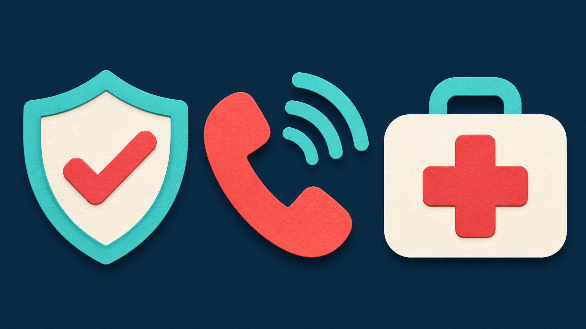

Check
Look for traffic, fire, electricity, or other hazards. Introduce yourself and ask permission if the person can respond. Use protective equipment when available. Check responsiveness, normal breathing, and obvious severe bleeding.
A short sequence to help you slow down and choose your next action.

First aid is the immediate help given before professional care arrives. Start with a safe approach, identify urgent problems, and arrange help early. You do not need to diagnose an illness to recognize that someone needs an ambulance.
Look for traffic, fire, electricity, or other hazards. Introduce yourself and ask permission if the person can respond. Use protective equipment when available. Check responsiveness, normal breathing, and obvious severe bleeding.
Unresponsiveness, abnormal breathing, or life-threatening bleeding needs immediate emergency help. Ask a specific bystander to call and another to bring an AED or first aid kit.
Follow the emergency dispatcher and give care within your training. Keep watching for changes. Avoid unnecessary movement if a head, neck, or spinal injury is possible.
Source: American Red Cross: First Aid Steps.
In Bahrain, call 999. Elsewhere, use your local emergency number. Put the phone on speaker so that you can follow the call handler while staying beside the person.
Answer the dispatcher’s questions and follow their instructions. Tell them immediately if the person’s condition changes.
Emergency number: Bahrain Ministry of Health. Response guidance: St John Ambulance.
For an adult, place the heel of one hand in the centre of the chest and the other on top. Keep your arms straight, press down about 5–6 cm, and let the chest rise fully between compressions. Aim for 100–120 compressions each minute.
If you are trained and able, use 30 compressions followed by 2 rescue breaths. If you cannot give breaths, keep giving chest compressions. Follow the dispatcher’s instructions and continue until professional help takes over, the person shows signs of life and breathes normally, or you cannot continue.
An automated external defibrillator gives spoken instructions and checks whether a shock is needed. Switch it on and follow its prompts. Keep everyone clear when it tells you to stand back, then resume CPR when instructed.
Adult overview: St John Ambulance: How to do CPR and Using an AED. Babies and children need age-specific guidance; learn those skills in a practical course.
The recovery position is a side-lying position for a person who does not respond but is breathing normally. It helps keep the airway open and allows fluid to drain away. Call emergency services and keep checking their breathing.
Practise the full technique with an instructor rather than relying on a written description during an emergency.
Source and illustrated technique: St John Ambulance: Recovery position.
Choking can block airflow. A person may clutch their throat, be unable to speak, or make little sound. If they can cough strongly, encourage coughing and watch closely. If they cannot breathe, speak, or cough effectively, get emergency help immediately.
Infant choking care is different. Seek medical assessment after abdominal or chest thrusts because injury can occur.